Estruturas de dados são as formas como organizamos os dados. Algumas formas são mais legíveis para as máquinas, outras são mais intuitivas para os humanos.
Função
Uma estrutura de dados existe para que determinado dado possa ser empregado de maneira eficiente. Essas estruturas são amplamente utilizadas em projetos de desenvolvimento de sistemas e permitem a administração de uma grande quantidade de informações.
Exemplos das estruturas de dados
Uma estrutura de dados é uma coleção de valores seus relacionamentos e suas operações, existem 5 principais: listas, árvores, vetores, filas e pilhas.
As listas são estruturas de dados muito utilizadas. Elas armazenam os dados em um formato de lista (dado o nome).
O que é uma lista?
Basicamente, uma lista é, na verdade, um conjunto de estruturas chamadas “nós”. Um nó é uma estrutura que armazena a informação a ser gerenciada por uma lista.
Na computação, existem dois tipos de lista: as listas ligadas e as listas duplamente ligadas.
Cada um dos nós de uma lista ligada, além de conhecer o valor que está sendo armazenado em seu interior, também conhece o elemento posterior a ele: por isso ela é chamada de “lista ligada”, pois os nós são amarrados com essa indicação de qual é o próximo nó.
Como funciona uma lista ligada?
Imagine uma lista ligada com o nome de funcionários de uma empresa. No começo, ela pode se apresentar da seguinte maneira (já que ela está vazia):
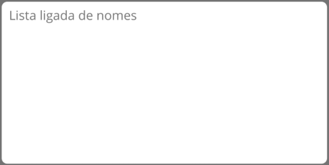
Quando adicionamos o primeiro nome à nossa lista, nós adicionamos um novo nó a essa lista. Esse nó não sabe quem será o próximo nó, já que nossa lista por hora só possui um único nó. Além disso, nossa lista precisa saber onde ela começa e onde ela termina, por isso, o nó inicial e o nó final também são indicados em uma lista ligada. Após adicionar nosso primeiro nome, nós podemos representar nossa lista da seguinte maneira:
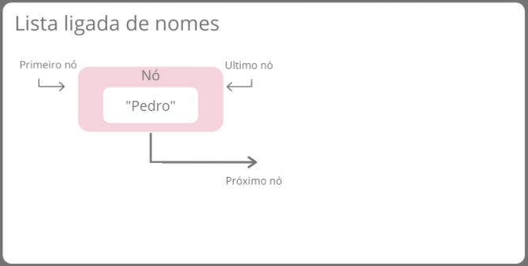
Como temos um único nó, ele é indicado como o primeiro nó e como o último nó, além de não ter indicação do próximo nó (que ainda não existe). No momento em que adicionamos um novo nome, nós podemos representar nossa lista com a ilustração abaixo:
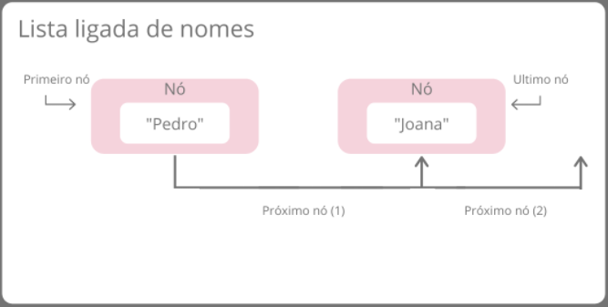
Veja que, para adicionarmos um novo nó a uma lista ligada, fizemos basicamente as seguintes operações:
Apontamos como sendo o último nó da lista o novo nó, já que ele foi o último a ser adicionado;
Pegamos quem era anteriormente o último nó e indicamos que o próximo nó dele será este último nó adicionado.
Como funciona uma lista duplamente ligada?
As listas duplamente ligadas constituem uma variação das listas ligadas. Por isso, elas apresentam praticamente o mesmo comportamento das listas ligadas.
A grande diferença das listas duplamente ligadas para as listas ligadas é que elas são bidirecionais. Vimos que, naturalmente, não conseguimos “andar para trás” em listas ligadas, pois os nós de uma lista ligada sabem somente quem é o próximo elemento. Nas listas duplamente ligadas, os nós sabem quem é o próximo elemento e também quem é o elemento anterior, o que permite a navegação reversa.
Para essa indicação, os nós também passam a apontar quem é o nó anterior.
Podemos representar uma lista duplamente ligada com dois nós na ilustração abaixo:
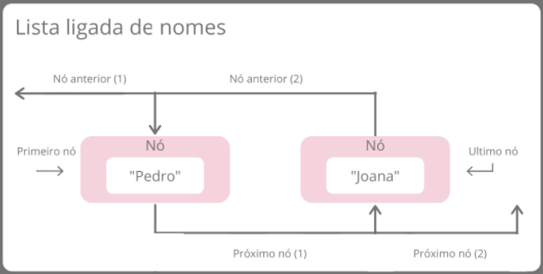
Árvores
Uma estrutura de dados Árvore é um conjunto finito de elementos em que cada elemento é chamado nó e o primeiro elemento é chamado de raiz da árvore.
A Estrutura de dados Árvore
É uma estrutura de dados que organiza seus elementos de forma hierárquica, onde existe um elemento que fica no topo da árvore, chamado de raiz e existem os elementos subordinados a ele, que são chamados de nós filhos. Cada nós filho pode conter zero, um ou mais de um nós filhos. Os nós filhos que não contém outros nós filhos são chamados de nós folha.
A estrutura de dados Árvore é uma estrutura que usa ponteiros para representar os nós filhos, ou seja, trata-se de uma estrutura dinâmica. A estruturas de dados Árvore não é linear, ou seja, os elementos que as compõem não estão armazenados de forma sequencial e também não estão todos encadeados como em uma lista.
Em uma estrutura de dados Árvore cada elemento armazena um tipo de dado e ponteiros para o elemento à esquerda e à direita, o que permite a inserção dos valores na árvore de forma recursiva.
Árvores Binárias
Considerando uma estrutura de dados Árvore com um conjunto de nós temos que considerar que esse conjunto pode ter outros subconjuntos chamados de sub-arvores que contem cada uma seu próprio conjunto de nós.
O conjunto de nós de uma árvore pode estar vazio ou ser dividido em três subconjuntos distintos, sendo eles: 1º subconjunto (nó raiz), 2º subconjunto (sub-árvore à direita) e 3º subconjunto (sub-árvore à esquerda).
Características de uma Árvore
Raiz: Toda arvore possui o nó raiz que é o nó inicial da árvore;
Grau: o número de filhos que um nó possui;
Nível (ou profundidade): a distância de um nó até a raiz;
Altura: o maior nível encontrado na árvore (altura de uma árvore com n nós pode variar de lg(n) até n-1;
Folha: o nó que não possui filho.
Operações em uma Árvore
Com relação às operações em árvores binárias, serão abordadas as seguintes:
Inserir um nó na árvore;
Removê-lo um nós de uma árvore;
Consultar os nós da árvore em ordem;
Consultar em pré-ordem;
Consultar em pós-ordem;
Na operação de inserção, as propriedades de uma árvore devem ser obedecidas, e todo novo nó é sempre uma folha. Além disso deve ser inserido respeitando a ordenação dos elementos dentro da árvore.
Nas operações de consulta, em ordem, pré-ordem e pós-ordem, todos os nós da árvore são listados, alterando-se apenas sua ordem.
Na consulta em ordem, cada árvore é mostrada com o ramo da esquerda, a raiz e, posteriormente, o ramo da direita.
Na consulta pré-ordem, cada árvore é mostrada com a raiz, o ramo da esquerda e, posteriormente, o ramo da direita.
Na consulta pós-ordem, cada árvore é mostrada com o ramo da esquerda, o ramo da direita e, posteriormente, a raiz.
Árvore Binária
Uma árvore binária é um conjunto de finito de elementos que pode estar vazio ou particionado em 3 subconjuntos disjuntos.
A Raiz
A sub-arvore esquerda
A sub-arvore direita
Em uma árvore binária os nós podem assumir grau 0, 1 ou 2;
Em uma árvore binária completa, todos os nós possuem grau igual a 2;
O número máximo de elementos em uma árvore de altura n é 2n.
Árvore binária de busca
Uma árvore binária de busca possui elementos menores que a raiz armazenados na sub-árvore da esquerda e elementos maiores que a raiz na sub-árvores da direita.
Árvore binária como um TDA
Podemos representar uma árvore binária como um tipo abstrato de dados com as seguintes características:
Conjunto de elementos;
Raiz para indicar o 1º elemento inserido
Cada elemento deve indicar os seus descendentes
Operações em uma árvore binária
Inserir novo elemento
Buscar um elemento
Mostrar todos os elementos
Remover um elemento
Contar elementos
Calcular nível de um elemento
Inserção de elementos em uma árvore binária de busca
O primeiro elemento inserido assumirá o papel de raiz da árvore;
Todo novo elemento entrará na árvore como uma folha;
Se o elemento for menor ou igual à raiz será inserido no ramo da esquerda. Caso contrário, no ramo da direita (para árvores decrescentes inverte-se a a regra).
Remoção de elementos em uma árvore binária de busca
Considerando que podemos remover qualquer elemento de uma árvore, podem ocorrer as seguintes situações:
O Elemento a ser removido é um nó folha (sem filhos à esquerda e à direita);
O Elemento a ser removido possui apenas um filho (à direita ou à esquerda);
O Elemento a ser removido possui dois filhos.
Remoção de elementos em uma árvore binária de busca
Em computação um Vetor (Array) ou arranjo é o nome de uma matriz unidimensional considerada a mais simples das estruturas de dados.
Geralmente é constituída por dados do mesmo tipo (homogêneos)e tamanho que são agrupados continuamente na memória e acessados por sua posição (indíce - geralmente um número inteiro) dentro do vetor. Na sua inicialização determina-se o seu tamanho que geralmente não se modifica mesmo que utilizemos menos elementos.
Abaixo temos o exemplo de um vetor. Os valores internos seriam os dados alocados no vetor, enquanto seu tamanho é dado pelo número de casas disponíveis (no caso 8) e o índice representa a posição do dado no vetor ( por exemplo podemos definir que 0 tem o índice 1, 2 tem índice 2, 8 tem índice 3 e assim sucessivamente).
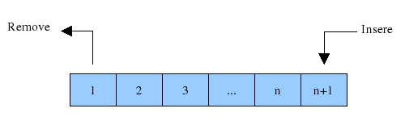
Fila
Fila são estruturas de dados bastante utilizadas na computação, onde o primeiro elemento a ser inserido, será também o primeiro a ser retirado. Desta forma, serão adicionados elementos no fim e removê-los pelo início.
O que é uma Fila?
A estrutura de dados fila segue um padrão conhecido como FIFO (first-in first-out), onde o primeiro a entrar é o primeiro a sair.
Imagine o exemplo de um fila do banco, onde diversos usuários a compõe em uma manhã de sexta-feira.
A senhora que chegou a fila às 7 da manhã se posiciona na fila. Como ela foi a primeira a chegar, estará no início da fila, a partir daí todos os usuários do banco que chegarem terão que se posicionar depois da senhora. Ao iniciar o atendimento, o primeiro usuário (início da fila) será atendido. Ao fazer isso, este sairá da fila e o elemento (usuário) que estava atrás deste passará a ser o início da fila. Este comportamento seguirá até que nenhum outro usuário se posicione ao final da fila e todos os usuários da fila sejam atendidos, tornando-a vazia.
Entre os exemplos de uso de uma fila em um sistema, podemos citar a troca de mensagens entre computadores conectados em uma rede ou até mesmo o controle de documentos para impressão, onde as páginas serão impressas da 1 até a 100, por exemplo.
Como funciona
Como citado acima, imagine uma fila de um banco. Ao iniciar o atendimento, o primeiro usuário que chegar à fila se posicionará em seu início.
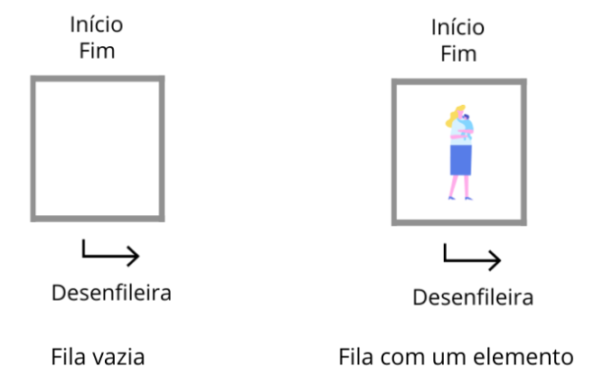
A partir daí, todos os usuários que chegarem à fila serão posicionados ao final dela. À essa funcionalidade de inserção damos o nome de enqueue.
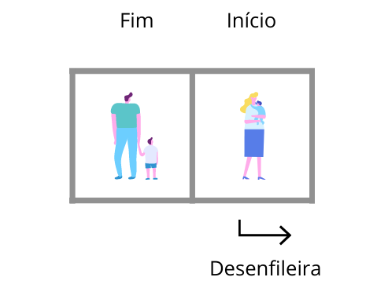
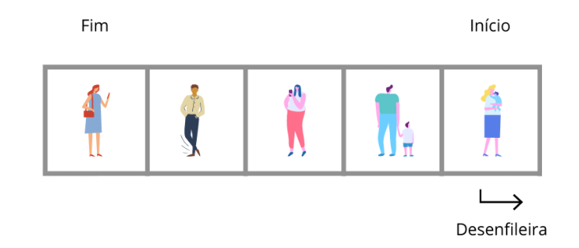
Sempre que um usuário for chamado para ser atendido, este é removido da fila e o usuário que estava na próxima posição passará a ser o início da fila. À essa funcionalidade de remoção damos o nome de dequeue.
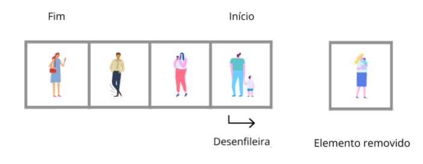
Este processo se repete até que a fila esteja vazia e nenhum usuário tenha que ser atendido.
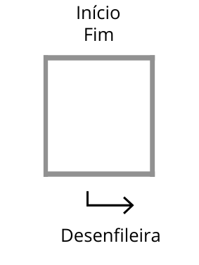
Pilha
Pilhas são estruturas de dados que armazenam os elementos em um formato sequencial, empilhando um item acima do outro (imagine uma pilha de pratos, por exemplo).
Estas estruturas permitem “empilhar” os itens que serão armazenados e “desempilhar” estes elementos da pilha quando precisarmos removê-lo. Sempre que um novo elemento é inserido (ou empilhado) damos a ele o nome de “topo”, pois é o primeiro elemento ao qual teremos acesso.
Segue um padrão conhecido como LIFO (Last In First Out), onde o último a entrar será o primeiro a sair. Imagine uma pilha de pratos, sempre que um prato é “empilhado” sob o outro, este último prato empilhado é o mais próximo (ou o topo da pilha) e, caso precisarmos remover um prato, é o prato do topo que será removido da estrutura.
Entre os exemplos de uso de uma pilha em um sistema, podemos citar a navegação entre páginas web ou até mesmo o mecanismo de desfazer/refazer dos editores de texto.
Como funciona a Estrutura de Dados Pilha
Vamos imaginar o cenário onde diversas cores de carros serão adicionados em uma pilha.
Após colocarmos o primeiro elemento em nossa pilha, a mesma poderá ser representada da seguinte forma:
O primeiro elemento “Carro preto” foi adicionado à nossa pilha, representando seu primeiro elemento (Primeiro nó). À esta funcionalidade de inserção de elementos damos o nome de push.
Logo, estaremos inserindo em seguida o próximo elemento “Carro verde”. Este elemento será então inserido logo acima do nosso elemento anterior (carro preto), ficando da seguinte forma:
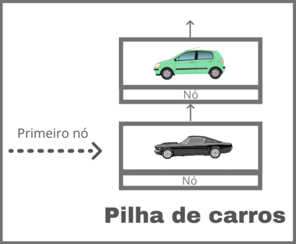
Desta forma, ao finalizar a inserção de todos os carros, o resultado da nossa pilha será a seguinte:
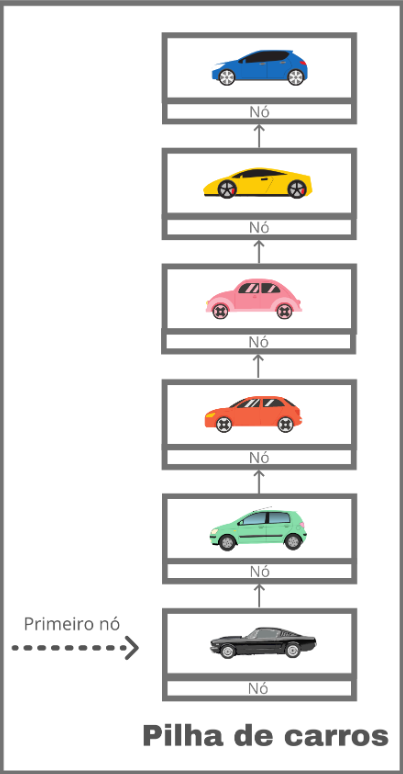
É possível notar que cada carro foi “empilhado” sob o outro e o último carro inserido é o “topo”. Esta é, basicamente, a funcionalidade de uma pilha.
E se quisermos remover elementos?
Como vimos acima, as pilhas seguem o padrão chamado LIFO (Last In First Out), onde o último elemento a entrar será o primeiro elemento a sair. Desta forma, o nosso último elemento inserido foi o “Carro azul”, este será o primeiro elemento a ser retirado.
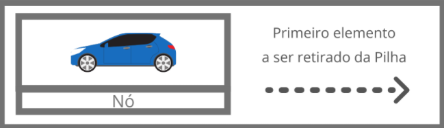
Após a retirada do nosso “Carro azul”, a pilha ficará da seguinte forma:
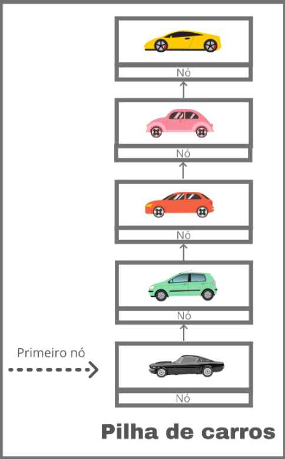
O último nó da pilha agora será o “Carro amarelo”, e caso o mesmo tenha que ser retirado, o último da pilha será o “Carro rosa” e assim sucessivamente. Desta forma, o primeiro elemento inserido (Carro preto), também será o último a deixar a pilha de carros. À esta funcionalidade de remoção de elementos damos o nome de pop.
Curso CSS
Cursin de CSS dqnipão, ce ta ligado que nos é bão.
Neste curso de CSS conheça como importar e incorporá-lo no HTML. Além disso o aluno aprenderá a escrever seus primeiros códigos e conhecer as principais propriedades e atributos!